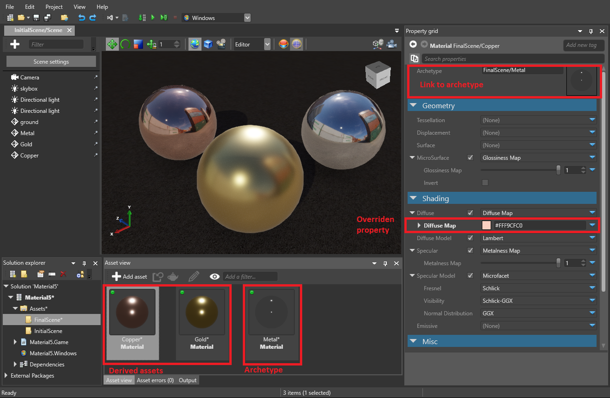

アーキタイプ
中級 デザイナー
アーキタイプとは、自身から派生するアセットのプロパティを制御するマスター アセットです。派生アセットは、アセットの「リミックス」バージョンを作成するときに便利です。
たとえば、Metal という名前のマテリアル アセットを共有する 3 つの球体エンティティがあるものとします。Metal アセットには、色や光沢度などのプロパティがあります。
Metal アセットのプロパティを変更すると、3 つの球体すべてに適用されます。たとえば、色プロパティを変更すると、3 つの球体すべての色が変わります。
次に、1 つの球体だけの色を変更し、他のプロパティは同じままにしたいものとします。その場合は、マテリアル アセットを複製し、その色を変更して、新しいアセットを 1 つの球体だけに適用することで実現できます。しかし、後ですべての球体の別のプロパティを変更しようとすると、両方のアセットを変更する必要があります。これでは時間がかかり、間違うおそれもあります。
もっとよい方法は、アーキタイプから新しいアセットを派生することです。派生アセットはアーキタイプからプロパティを継承し、必要に応じて個別のプロパティをオーバーライドできます。たとえば、球体のマテリアル アセットを派生して、その色をオーバーライドできます。その後、アーキタイプの光沢度を変更すると、3 つの球体すべての光沢度が変わります。

アーキタイプからアセットを派生し、さらにその派生アセットから別のアセットを派生することができます。このようにすると、アセットのさまざまなレイヤーを作成して、プロジェクトを整理することができます。
Archetype
Derived asset
Derived asset
アーキタイプからアセットを派生する
［Asset view］で、新しいアセットの派生元にするアセットを右クリックし、［Create derived asset］を選択します。

新しい派生アセットがプロジェクトに追加されます。このアセットは、プロパティをアーキタイプアセットから派生しています。
派生アセットのプロパティでは、アーキタイプ アセットが［Archetype］に表示されます。

［Property grid］でアーキタイプ アセットを右クリックし、［Select the referenced asset］を選択して、アーキタイプ アセットをすばやく選択できます。

オーバーライドされたプロパティ
［Property grid］では、派生アセットのプロパティのうち、アーキタイプと異なるものがわかるように表示されます。オーバーライドされた固有のプロパティは白で、継承されている (同じ) プロパティはグレーで表示されます。
次のスクリーンショットでは、［Diffuse Map］プロパティはオーバーライドされています。それ以外のプロパティは継承されています。
プロパティをアーキタイプの値にリセットする
派生アセットのオーバーライドされた固有のプロパティを、アーキタイプの値にリセットできます。そのためには、オーバーライドされたプロパティを右クリックして、［Reset to base value］を選択します。

アーキタイプをクリアする
アーキタイプと派生アセットの間のリンクは削除できます。つまり、派生アセットはアーキタイプに対する変更を継承しなくなり、完全に独立したアセットになります。
そのためには、［Asset view］で派生アセットを右クリックし、［Clear archetype］を選択します。